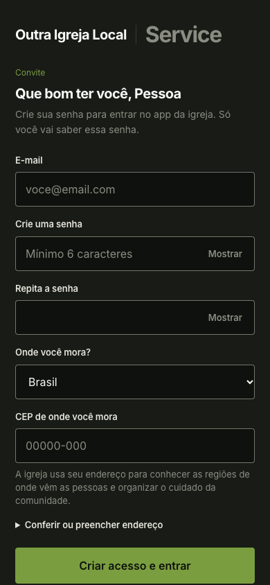
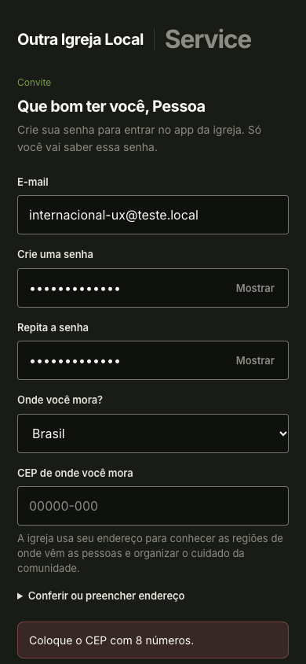
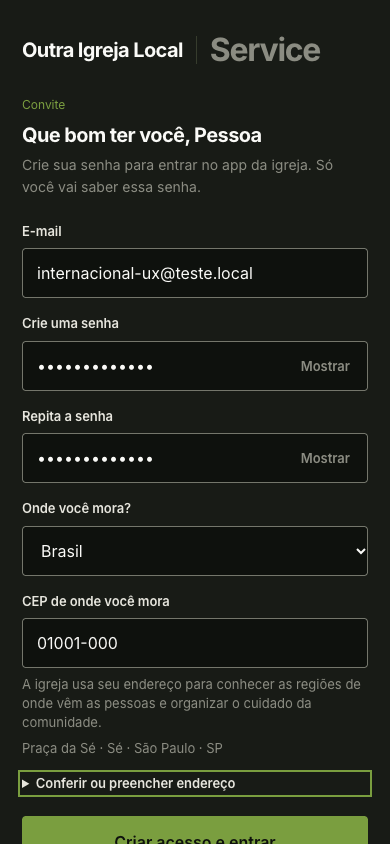
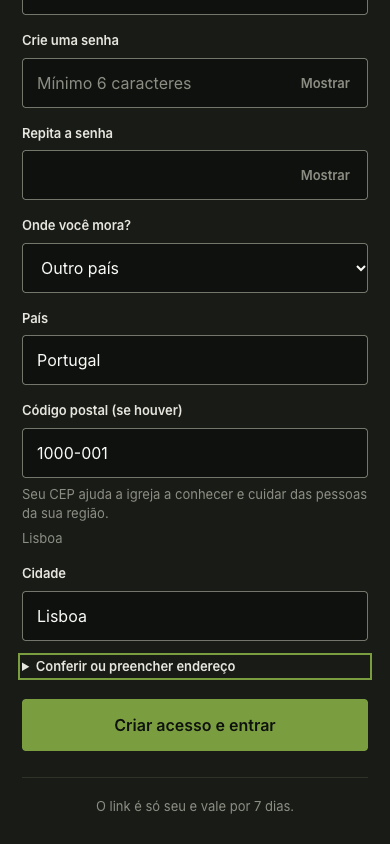
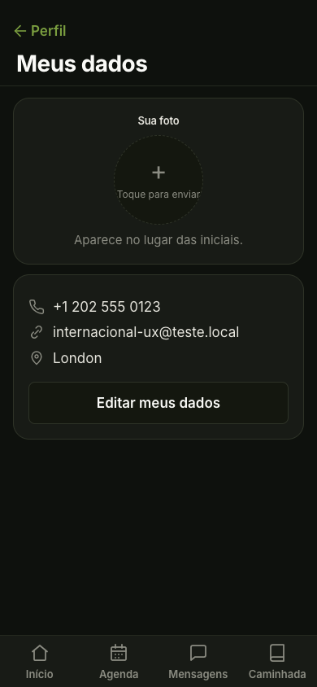

CEP obrigatório no convite brasileiro, preenchimento pela API e endereço equivalente para outro país. Veja verificações e limites. Capturas locais por etapa, com tentativas intermediárias registradas no manifesto.




